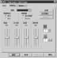
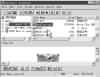

|
|
| 当前位置：电脑报电子版 > 1999 年 > 39 期 > 软件世界 > 直击家用电脑制作VCD |
| 《 直击家用电脑制作VCD 》 |
| 随着多媒体技术日趋完善， VCD的制作在家用电脑上完成已非难事，只需添加部分设备，再配合视频处理及压缩软件，同样能达到高品质的效果。谈到添加设备，电脑发烧友们常感头皮发麻，所以特此列出了从不投资到适当投资的几种方案供大家选择，当然，最后达到的效果肯定是不同的。
● 方案一：如果有带视频输入功能的显示卡，不投资 不投资当然对电脑配置有一定要求了：必须拥有带有视频输入功能的显示卡及一块足够大的硬盘（剩余空间2G以上），最好PⅡ300（赛扬）以上、64M以上内存、全双工声卡，以保证处理视频图像的速度能够超过蜗牛（蜗牛的感觉笔者是深有感触）。目前市场上带有视频输入功能的显示卡只有华硕3X00/TV或ATI的Rage Pro芯片系列。它们都附带有视频捕捉软件，如华硕的Live 3X00、ATI的Video Player等。其功能包括视频输出（PAL/NTSC）、视频输入、视频捕捉（单帧、连续）。单帧图像以BMP格式保存，而连续画面则被保存为AVI文件。 视频输入设备可以是录像机、摄像机、摄像头、TV调谐器（有线电视增补频道接收器）及现在已经普及的VCD机。将视频设备的视频输出（VIDEO OUT）通过视频电缆连接到显示卡的视频输入接口（VIDEO IN），再将视频设备的音频输出（AUDIO OUT）通过音频电缆连接到声卡的线路输入（LINE IN）接口，当然，如果你希望同时连接一个以上的视频设备，建议你购买一台视/音频切换器（有的家庭影院有这一功能）。 使用时，先打开视频设备，选择好你要输入的视频内容，在捕捉前，必须对视频捕捉软件进行设置，下面以华硕的Live 3X00为例。设置时打开Option选项下的“正确设置视频信号的制式”（PAL/NTSC），按下视频设备的播放键，你就可以在电脑上欣赏多姿多彩的画面了。ASUS Live 3X00默认的快捷键为：F1捕捉单帧画面，F2捕捉单帧连续画面，F3捕捉连续画面。在你捕捉画面之前，先设置好画面文件存放的路径及画面的大小，要注意的是，连续画面生成的AVI文件十分庞大，1G的硬盘空间大概只能存放几分钟的内容，所以硬盘空间必须要尽可能大，而且是连续空间。尽管如此，此方案只能处理较短的视频图像，如卡拉OK、电影电视中的精彩镜头、你孩子的生活片断等等，对于家庭应用来说，已经是足够了。AVI文件生成后下一步该怎么办呢，我们将在方案二中作进一步说明。 ● 方案二：采用视频捕捉卡，最少投资 如果你已经拥有一台PⅡ300以上的系统，只要再花上七百大元左右，买一块视频捕捉卡就可以达到方案一同样的效果了。视频捕捉卡种类很多，目前使用较多的为圆刚系列及蓝宝石系列，因为蓝宝石系列全面支持二次开发，在此就作一重点介绍。蓝宝石系列视频捕捉卡包括带电视接收功能的FlyVideo－T系列及不带电视接收功能的FlyVideo EZ系列，FlyVideo系列提供的SDK包括MS公司的VFW SDK和Fly SDK的两套软件包。其中，VFW SDK包括19个C语言、5个汇编语言、2个VB语言Sample程序即其源代码；而Fly SDK则有13个支持VB、VC及32位开发的Sample程序及其源代码。有了这些软件包，你可以在应用程序中任意调用及设置视频捕捉卡，完全可以不考虑应用软件与视频捕捉卡的接口问题。 视频捕捉卡与视频设备的连接与方案一相同，使用上也大同小异，就不作详细说明了，我们接下来介绍视频图像的后期制作。 视频图像的后期制作，主要是指AVI文件的编辑及压缩成MPEG－1文件的过程，对其应用较广的软件有： (1）Adobe Premiere 4.2（或5.0） 用于采集和后期编辑AVI文件，做特技效果必不可少。 (2）XING MPEG ENCODER 用于将AVI文件转换成MPEG文件。 (3）XINGMPEG PLAYER 3.2 用于播放MPEG、VCD文件的程序。 (4）PhotoImpact3.0或4.0 可方便地对图像文件进行精彩的编辑加工。比Adobe Photoshop更加易学易用。 (5）Win DAC32抓音轨程序，抓取音乐CD光盘上的音乐为Premiere 4.2可识别的WAV格式文件，此软件也是必不可少。 对几个软件具体的制作过程及技巧，由于内容较多，这里就不作阐述了。《电脑报》上有过很多介绍，大家可以去翻翻报纸或去电脑报网站上查阅。没有刻录机，可以将制作好的MEPG文件拿到专营刻录VCD的地方进行后期制作，以备长久保存。不过以笔者经验，要制作质量好的VCD，最好是使用MPEG实时压缩/回放卡，也就是需要适当投资的方案三。 ● 方案三：采用MPEG实时压缩/回放卡，再加上刻录机，适当投资 目前市场上低价位的MPEG实时压缩/回放卡主要是银河天影系列、阿波罗系列等。刻录机则有松下、飞利浦、奥林巴斯及理光等。利用这些设备，我们还可以经营录像带转VCD、个人卡拉OK碟、电子像册及VCD、CD翻录业务。如我们要将摄像机中的录像带刻录成VCD： 首先根据录像带的长度确定要刻录的VCD的张数，一般一张VCD可以刻录约70分钟的内容。连接好摄像机视频设备与银河天影卡的视音频连线，打开视频设备，运行银河天影卡的应用软件JMC230 Pro，进行将录像带内容直接压缩至硬盘的工作。 JMC230 Pro包括有压缩/回放程序、AVI到MPEG转换程序Transcode、视频播放程序Video For Windows，及说明文件MPEG Release Notes。我们在正式转换前，应先在模式菜单进行一些基本的设置(图一)，如MPEG文件的格式、压缩方式，视频信号的制式及输入接口、图像调整，音频信号的采样频率等。然后在捕获菜单设置中确定要捕获的节目的长度，最后回到主界面，按下方太阳图标压缩工作就开始了，当然，其中你必须指定目录及文件名。如果按下有眼睛的图标，还可以边压缩边观看，只是画面丢帧很厉害。 压缩好后银河天影提供了VIDEO PACK4.0来进行刻录。VIDEO PACK4.0支持市面上的大多数刻录机，操作比较简单，界面如图二。选中我们刚才压缩好的MPG文件，用鼠标拖到下方的Video CD框中，会显示一个带边框的图标，如要选择多个MPG文件，必须将多个图标首尾相连。 文件选择完毕后，按下VIDEO PACK4.0中带红点的图标，在弹出的对话框选项中全部选择OK，再放一张空白的CD－R盘片至刻录机中，你就可以一面喝咖啡，一面祈祷千万别停电了。 (文/戴凌) |
| 下载本期推荐软件 | 页 首 |
| 《电脑报》版权所有，电脑报网站编辑部设计制作发布 |